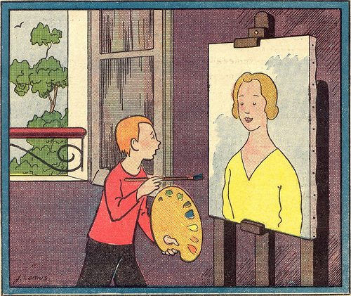

Sunday, November the 2nd, 2008
back to: title, date or indexes

This picture shows the mezzotintist Rex Tint, as a child, painting a portrait of his sister Dot Tint, chronicler of vampiric sea shanties and much else besides. Rex had great pretensions, in his curdled youth, to becoming a painter of note, rather than a mezzotintist, and he executed innumerable daubs, of which the portrait of Dot is but one. Several art critics have tugged at their beards and fiddled with their hornrimmed spectacles as they struggle to understand why Rex Tint abandoned paint and set out on the path to mezzotinty glory. Now the tale can be told. Well, not “can be” but “has been”, in Pebblehead's latest bestselling paperback How The Secret Police Confiscated Rex Tint's Paintbox And How He Sobbed And Whimpered Until A Kindly Butcher's Shop Assistant Gave Him A Secondhand Mezzotinting Kit. Annoyingly, the prize-winning paperbackist does not tell us the reason why the secret police targeted the tiny painter. Had he perhaps daubed a less than flattering portrait of Prince Fulgencio? Or, on one of his plein air excursions, had he unwittingly painted a top secret experimental brain-incapacitating nerve gas facility? It really would help if Pebblehead could do some proper research for a change, but I expect he is too busy bashing out his next bestseller on that antique typewriter of his, looking up occasionally at the picture of Anthony Burgess drawingpinned to his cork board and pretending it is a mirror.